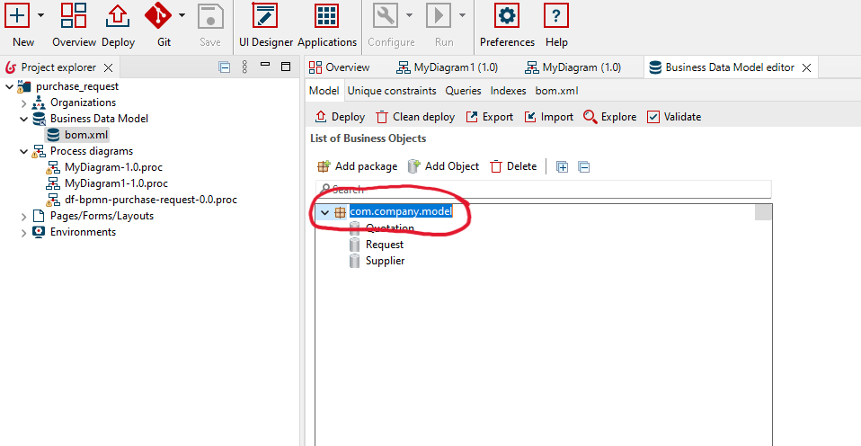
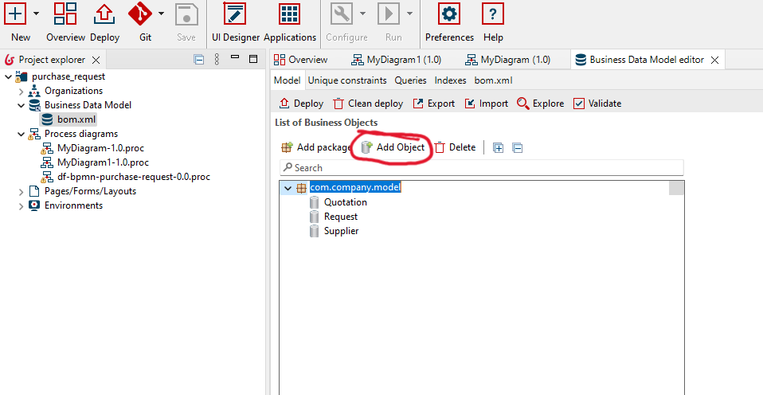
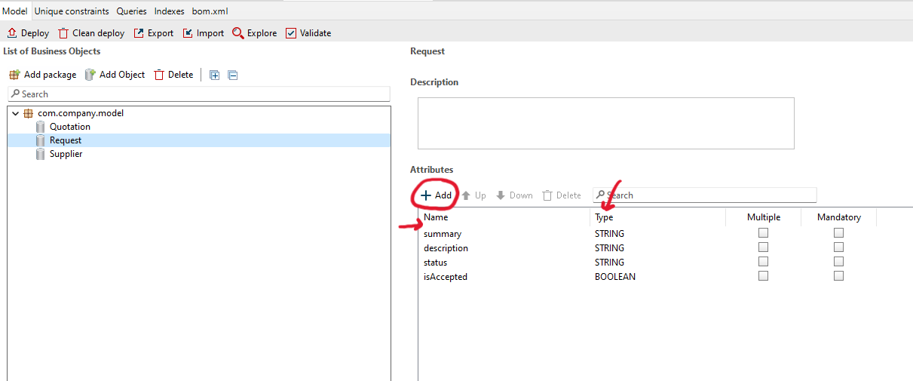
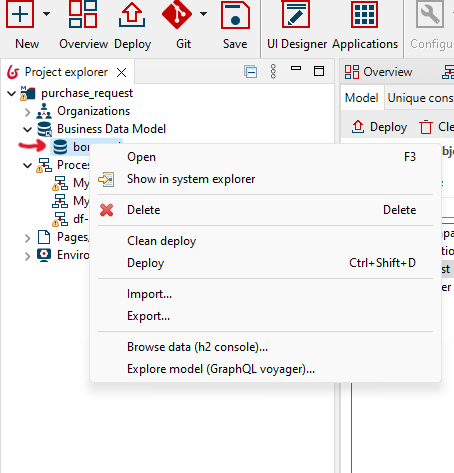
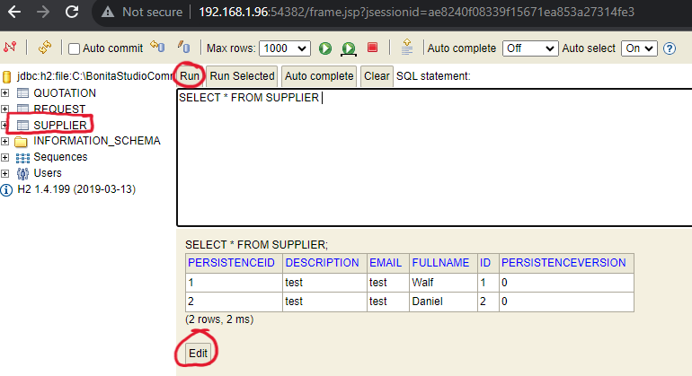
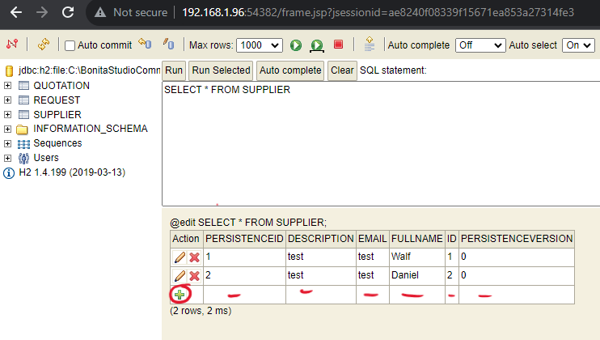
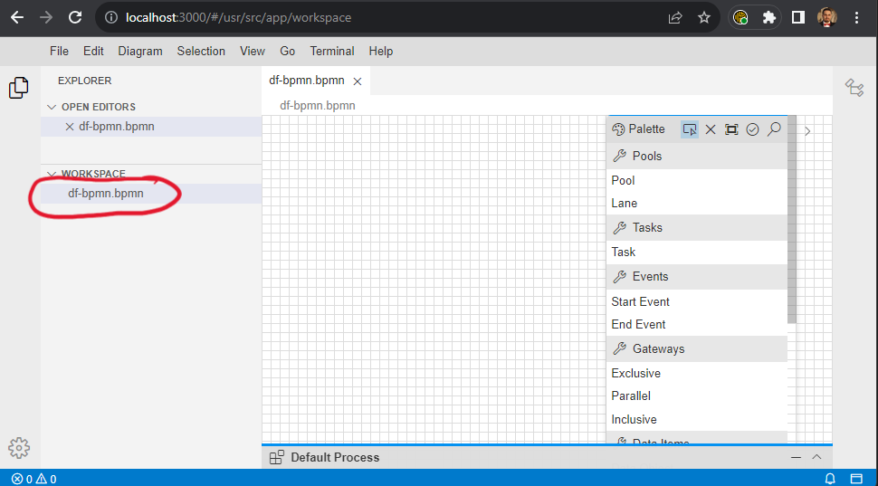
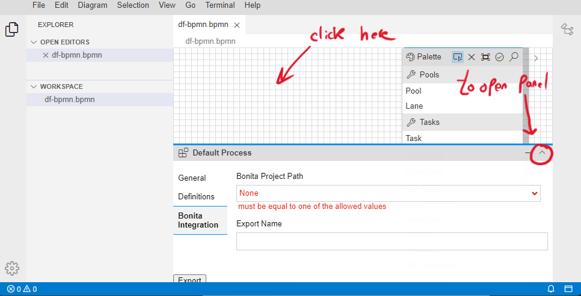
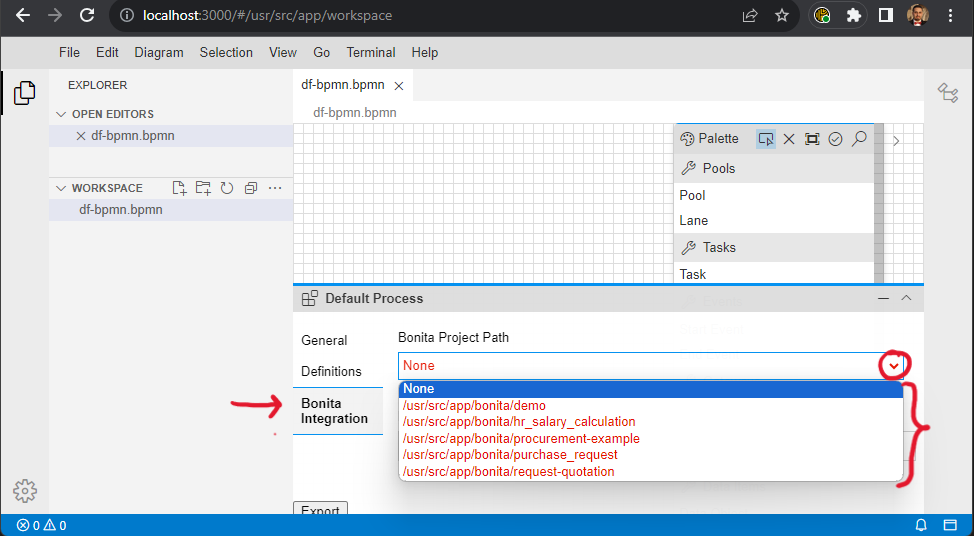

Add data objects
Follow the next steps to add the UML objects within the BDM:-
Click on bom.xml in the Business Data Model

-
Select a package (you can also add your own packages).
 -
Click on 'Add Object'
 -
Change the name of the object, and then define its attributes and their types.

Add UML objects to the DBM
Follow the steps described above to add UML objects to the BDM.
Add data information to the DBM
In this exercise, we assume that the suppliers are already stored in the BDM (database). Therefore, you need to add them manually to the database.-
Right-click on the 'bom.xml' file in the BDM. Then, select 'Browse data (h2 console) ...'.
 -
The database should automatically open in the browser. Double-click on 'Supplier', then click 'RUN'.
After that, click 'Edit' to modify the database table and start adding information.
 -
Click on the '+' icon and add new suppliers (2 or 3).

Access the DBM in the DF-BPMN tool
After creating BDM objects, you should create a reference of the database within DF-BPMN tool. This reference can help you to access the objects within DF-BPMN tool during the modeling phase (when you use data store objects).
- Open the DF-BPMN tool: http://localhost:3000/#/usr/src/app/workspace
-
Open your project in the DF-BPMN tool by double-clicking on the project file.
 -
Click on the white space, and then open the property panel.
 -
Click on 'Bonita Integration,' and then select your Bonita project based on its name, which is the last
folder in the path. For example, 'hr_salary_calculation' is an example of a Bonita project name.
 -
Save your project (Ctrl + S) and refresh your browser. Now, during modeling, you can access the data
objects by their names and attributes.